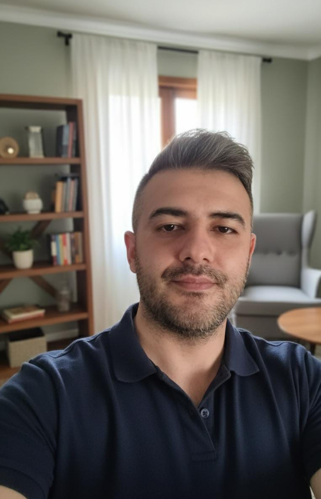

Hakkımda
Siber güvenlik, benim için yalnızca teknik bir uzmanlık alanı değil; disiplin, dikkat, sorumluluk ve süreklilik gerektiren bir çalışma biçimidir. Yıllar içinde oluşan yaklaşımım; güvenliği yalnızca araçlar ve anlık müdahaleler üzerinden değil, insan faktörü, süreç yönetimi ve kurumsal dayanıklılık ekseninde değerlendirmeye dayanır.
Çalışmalarımın odağında; riskleri erken fark etmek, güvenlik süreçlerini ölçülebilir hâle getirmek, kriz anlarında sağlıklı karar mekanizmaları kurmak ve teknik ekiplerle yönetim arasında net bir köprü oluşturmak yer alır. Benim için güvenlik, yalnızca tehditleri durdurmak değil; kurumların sürekliliğini koruyan sürdürülebilir bir yapı inşa etmektir.
Zaman içinde edindiğim deneyimler; savunma odaklı yaklaşım, olay müdahale koordinasyonu, zafiyet önceliklendirme, ekip yönetimi, operasyonel disiplin ve güvenlik kültürünün kurumsallaştırılması gibi başlıklarda yoğunlaştı. Teknik bakış açımı, sahadan gelen gerçeklik ve insan davranışına dair gözlemlerle birleştirmeye önem veriyorum.
Yaklaşımım; gösterişten uzak, sakin, analitik ve sonuç odaklıdır. Güvenlikte en değerli unsurun yalnızca bilgi değil, o bilginin ne zaman, nerede ve hangi sorumlulukla kullanılacağı olduğuna inanırım. Bu nedenle çalışmalarımda netlik, gizlilik, etik sınırlar ve karar kalitesi temel öncelikler arasında yer alır.
Bugün çalışmalarımı; siber güvenlik yönetimi, süreç geliştirme, risk değerlendirme, kriz koordinasyonu ve kurumsal güvenlik bakış açısının güçlendirilmesi çerçevesinde sürdürüyorum. Bu site ise, bir vitrin oluşturmak için değil; zaman içinde oluşan düşünsel birikimi, yayınları ve profesyonel yaklaşımı sade bir yapıyla kayıt altına almak amacıyla hazırlanmıştır.
